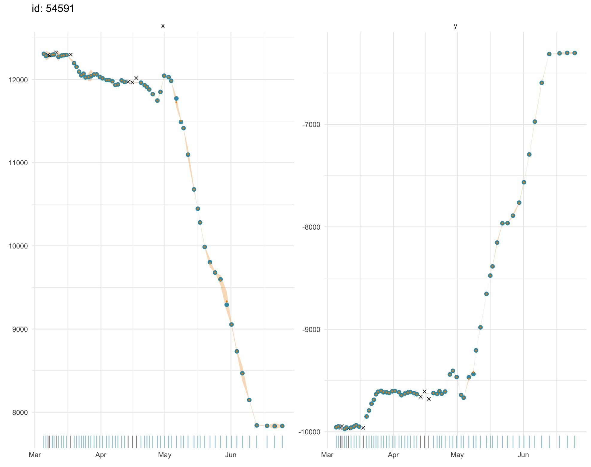
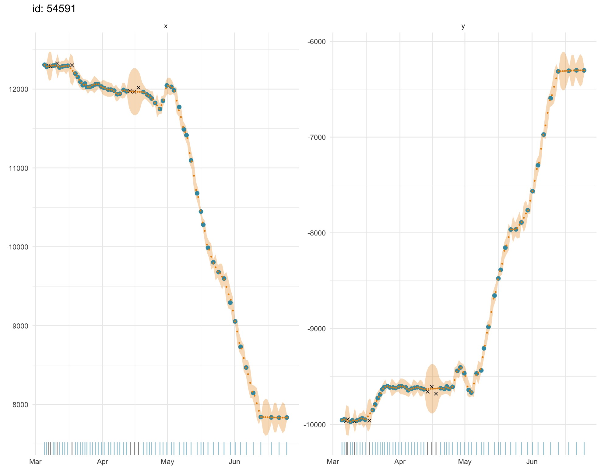
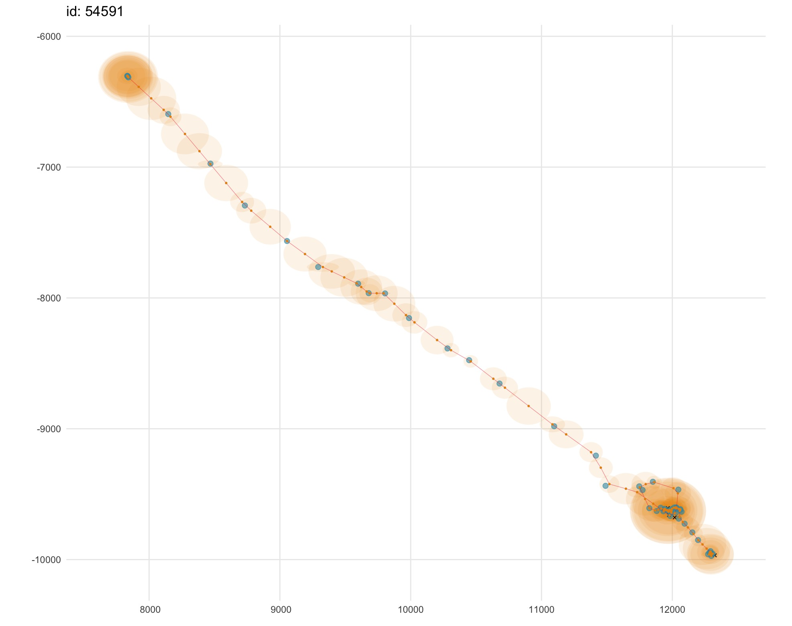
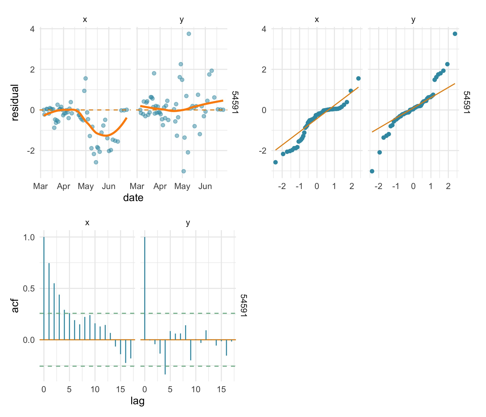
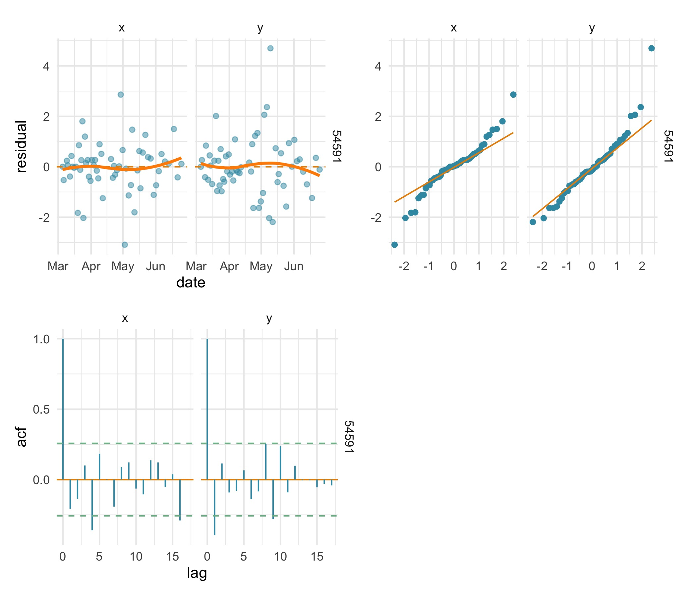

Just like any other statistical model fitting exercise, validating
SSM fits to tracking data is an essential part of any analysis. SSM fits
can be visualized quickly using the generic plot function
on model fit objects:
fit.rw <- fit_ssm(ellie,
model = "rw",
time.step = 24,
control = ssm_control(verbose = 0))
plot(fit.rw, what = "fitted")
plot(fit.rw, what = "predicted")
Both fitted and predicted locations (gold) can be plotted as 1-D
time-series on top of the observations (blue) to visually detect any
lack of fit. Observations that failed to pass the prefilter
stage prior to SSM fitting (black x’s) can be included (default) or
omitted with the outlier argument. Uncertainty is displayed
as a \(\pm\) 2 SE envelope (pale gold)
around estimates. A rug plot along the x-axis aids detection of data
gaps in the time-series. Note, in second plot, the larger standard
errors for predicted locations through small data gaps.
The SSM fits can also be visualised as 2-D tracks via the
type argument:
plot(fit.rw, "p", type = 2, alpha = 0.1)
This option provides an intuitive view of the estimated track (gold)
through the observations (blue), along with a 2-dimensional
representation of the location uncertainty (pale gold 95% confidence
ellipses). Here, we use the alpha argument to increase the
transparency of the confidence ellipses to aid visualization in regions
where many overlay one another (upper left and lower right in
figure).
Residual plots are important for validating models, but classical
Pearson residuals, for example, are not appropriate for state-space
models. Instead, a one-step-ahead prediction residual, provides a useful
if computationally demanding alternative. In aniMotum,
prediction residuals from state-space model fits are calculated using
the osar function and can be visualized as time-series
plots, Q-Q plots, or autocorrelation functions:
# use patchwork package to arrange plot.osar options
require(patchwork)
# calculate & plot residuals
res.rw <- osar(fit.rw)
(plot(res.rw, type = "ts") | plot(res.rw, type = "qq")) /
(plot(res.rw, type = "acf") | plot_spacer())
Here, the 3 residual plots highlight a poor fit of the
rw SSM to the x-coordinate. The time-series residual plot
implies a bias in the rw SSM fit over the latter half of
the track, the Q-Q plot highlights a distinct departure from normality
in the x residuals, and the x residuals are positively autocorrelated up
to about lag 5.
Fitting the crw SSM to the same data, we can see the
prediction residual plots imply a less biased fit with approximately
normal residuals that have little autocorrelation in both
coordinates.
fit.crw <- fit_ssm(ellie,
model = "crw",
time.step = 24,
control = ssm_control(verbose = 0))
res.crw <- osar(fit.crw)
(plot(res.crw, type = "ts") | plot(res.crw, type = "qq")) /
(plot(res.crw, type = "acf") | plot_spacer()) Additionally, the crw model fit has
a lower AICc than the rw model. Note that AIC
statistics can be misleading for time-series models and should not be
used as the sole criterion for preferring one model fit over another.
Here, at least, the AICc values are in agreement with the
prediction residual diagnostics.
c(fit.rw$ssm[[1]]$AICc, fit.crw$ssm[[1]]$AICc)#> [1] 1329.867 1292.494As calculation of prediction residuals can be computationally
demanding, typically requiring more time than fitting the model,
especially for multiple individual tracks, the osar
function is automatically implemented in parallel when calculating
residuals for more than 2 tracks.
Users wishing to explore residual diagnostics for hierarchical models
(including state-space models) should refer to the DHARMa R
package, which has more details on diagnostics for hierarchical models.
Although aniMotum is not able to make use of the
DHARMa package, its vignette and references therein can be
a useful guide for diagnosing model fits (Hartig, 2022).
Hartig, F (2022) DHARMa: Residual Diagnostics for Hierarchical (Multi-Level / Mixed) Regression Models. R package version 0.4.6. http://florianhartig.github.io/DHARMa/